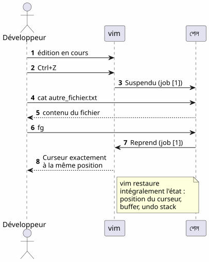
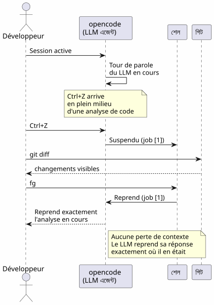
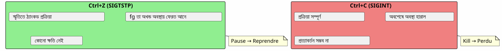
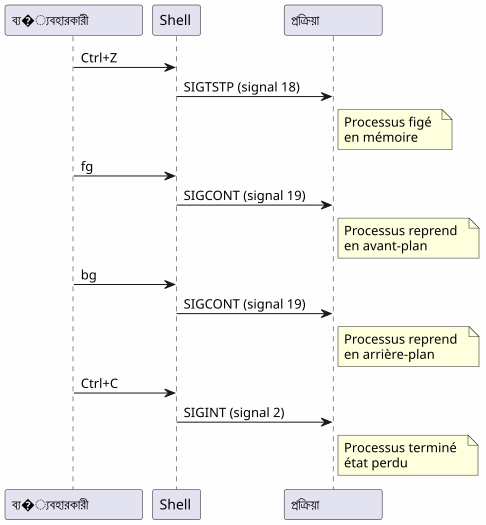

fg কমান্ডের সুপার টিপস: Ctrl+Z যখন আপনার টার্মিনাল সেশনকে বাঁচায়
Publié le 18 April 2026
- সমস্যা : একটি ব্যস্ত টার্মিনাল
- তিনটি অপরিহার্য কমান্ড
- সেনারিও ১ : দীর্ঘ বিল্ড
- শেনারিও ২ : ভুলিত সম্পাদক
- সেনারিও ৩ : প্রক্রিয়া opencode স্থগিত
- সেনারিও ৪ : একই সাথে অনেক কাজ পরিচালনা করা
- fg, bg, Ctrl+Z, Ctrl+C এবং & এর মধ্যে পার্থক্য
- একটি কাজের সম্পূর্ণ জীবন-চক্র
- উন্নত টিপস
- সাধারন ব্যাহতি ও ভุล
- সারসংক্ষেপ ডায়াগ্রাম
- fg কেন হ্রাসপত্রিত
- প্রযুক্তিগত স্মৃতি : সিগন্যুল
- নিষ্কর্ষ
- রেফারেন্স
আপনি ফেলেন`./gradlew build`, টার্মিনাল ৩ মিনিটের জন্য ব্লক করা হয়েছে, এবং আপনাকে étrangère কিছু করতে দরকার প্রতীক্ষার সময়? একটি নতুন ট্যাব খুলতে দরকার নেই।`Ctrl+Z`প্রครিয়া বন্ধ করা,`fg`এটি আপনি যে জায়গায় ছেড়ে গিয়েছিলেন সেখানে আনে। এটি ডেভেলপারের দৈনন্দিন জীবনে সবচেয়ে অমূল্যায়িত Unix টিপস।
- টক
-
[]
সমস্যা : একটি ব্যস্ত টার্মিনাল
প্রতিটি ডেভেলপার এই পরিস্থিতি পাস করেছে :
$ ./gradlew build
> Building...টার্মিনাল ব্লক করা হয়েছে। আপনি আর কোনো কমান্ড টাইপ করতে পারবেন না। এবং আপনাকে একটি ফাইল পরিদর্শন করতে হবে, একটি চালু করতে`git status`, অথবা একটি ব্যস্ত পোর্ট পরীক্ষা করুন।
Failed to generate image: PlantUML preprocessing failed: [From <input> (line 5) ]
@startuml
skinparam backgroundColor #FEFEFE
actor Développeur as dev
participant "python
^^^^^
Syntax Error? (Assumed diagram type: sequence)
@startuml
skinparam backgroundColor #FEFEFE
actor Développeur as dev
participant "python
print("টার্মিনাল", end='')" as term
participant "Gradle
( প্রক্রিয়া )" as gradle
dev -> term : ./gradlew build
term -> gradle : Lance le build
gradle -> term : Occupe le terminal\n(pas de prompt)
dev -> term : veut taper une commande
term --> dev : ❌ Terminal bloqué
note right of dev
Le développeur est
paralysé pendant
toute la durée du build
end note
@enduml
বিপজির অধিকাংশ ডেভেলপার একটি নতুন টার্মিনাল খুলেন। কিন্তু একটি আরও সৌন্দর্য-সম্পন্ন, দ্রুত এবং নেটিভ সমাধান আছে: কাজের ব্যবস্থাপনা।
তিনটি অপরিহার্য কমান্ড
Ctrl+Z — নিরোধ (SIGTSTP)
`Ctrl+Z`সিগনাল পাঠায়`SIGTSTP`ফোরগ্রাউন্ড প্রক্রিয়ার দিকে। প্রক্রিয়াটিঅবসত— মারা হয়নি — এবং টার্মিনাল তার প্রম্পট পেয়ে যায়।
$ ./gradlew build
> Building...
^Z
[1]+ Stoppé ./gradlew build
$ব্র্যাকেটের মধ্যে সংখ্যা`[1]`এটিজব নম্বর. Le `+`ডিফল্ট জবটি নির্দেশ করে।
fg — আগের পلانে লাওয়া
`fg`সস্পেন্ডেড কাজকে অগ্রবর্তী প্ল্যাটফর্মে আনে। প্রক্রিয়া ঠিক যেমন থেকেই থেমে গেছে তা থেকে পুনরায় শুরু হয়।
$ fg
./gradlew build
> Building... (reprend où il en était)একটি নির্দিষ্ট জব নম্বর দিয়ে :
$ fg %2bg — পটভূমিতে পুনরায় শুরু করুন
`bg`প্রক্রিয়া টার্মিনাল ব্লক না করে পুনরায় চালু করুন। দীর্ঘ বিল্ডের জন্য উপযুক্ত।
$ bg
[1]+ ./gradlew build &
$Le `&`এতে শেষে বোঝায় যে প্রক্রিয়া পটভুমিতে চলছে।
jobs — শেলের কাজগুলো তালিকা করুন
$ jobs
[1]- Stoppé vim README.md
[2]+ En cours ./gradlew buildFailed to generate image: PlantUML preprocessing failed: [From <input> (line 5) ] @startuml skinparam backgroundColor #FEFEFE skinparam defaultFontName sans-serif state "অগ্রভূমি ^^^^^ Syntax Error? (Assumed diagram type: sequence) @startuml skinparam backgroundColor #FEFEFE skinparam defaultFontName sans-serif state "অগ্রভূমি (ব্লকযুক্ত টার্মিনাল)" as fg #LightCoral state "বন্ধিত (Ctrl+Z)" as stopped #LightYellow state "পটভূমি (bg)" as bg_ #LightGreen [*] --> fg : Lance une commande fg --> stopped : Ctrl+Z\n(SIGTSTP) stopped --> fg : fg\nreprend en avant-plan stopped --> bg_ : bg\nreprend en arrière-plan bg_ --> fg : fg\nramène en avant-plan fg --> [*] : Commande terminée note right of stopped Le processus est figé mais _pas_ tué end note note left of bg_ Le terminal est libre le build continue end note @enduml
সেনারিও ১ : দীর্ঘ বিল্ড
এটি সবচেয়ে সাধারন ব্যবহারের ক্ষেত্র। আপনি একটি Gradle বিল্ড চালু করেন, টার্মিনাল ব্লক হয়, এবং আপনাকে অন্য কিছু করতে হয়।
Failed to generate image: PlantUML preprocessing failed: [From <input> (line 8) ] @startuml skinparam backgroundColor #FEFEFE autonumber actor Développeur as dev participant "টার্মিনাল" as term participant "Gradle" as gradle database "অবস্থা ^^^^^ Syntax Error? (Assumed diagram type: sequence) @startuml skinparam backgroundColor #FEFEFE autonumber actor Développeur as dev participant "টার্মিনাল" as term participant "Gradle" as gradle database "অবস্থা প্রক্রিয়া" as state dev -> term : ./gradlew build term -> gradle : Lance le build gradle -> state : En cours (FG) dev -> term : Ctrl+Z term -> state : Suspendu (job [1]) term --> dev : Prompt libre $ dev -> term : git status term --> dev : working tree clean dev -> term : fg term -> state : Reprend (FG) gradle --> dev : Build réussi ✓ note right of state Le processus Gradle n'a jamais été tué Il reprend exactement où il s'était arrêté end note @enduml
ধাপে ধাপে
$ ./gradlew build
> Building...
^Z
[1]+ Stoppé ./gradlew build
$ git status
On branch main
nothing to commit, working tree clean
$ fg
./gradlew build
> Building...
BUILD SUCCESSFUL in 2m 34sশেনারিও ২ : ভুলিত সম্পাদক
আপনি আছেন`vim`, vous avez besoin de consulter un autre fichier sans quitter`vim`.
# Dans vim, en mode commande :
:shell
$ cat /path/to/other/file.txt
$ exit
# Retour dans vimকিন্তু এটা ভারী। সঙ্গে`Ctrl+Z`, এটি তৎক্ষণিক :
# Dans vim, n'importe quel moment :
Ctrl+Z
[1]+ Stoppé vim README.md
$ cat /path/to/other/file.txt
# ... lire le fichier ...
$ fg
vim README.md
# Retour exact là où on en était, curseur en place
(empty)vim`পূর্ণরূপে তার অবস্থা পুনরুদ্ধার করে একটি`fg: কurzor-এর পজিশন, বাফারের কন্টেন্ট, অডো ইতিহাস — সবকিছু সংরক্ষিত হয়।
সেনারিও ৩ : প্রক্রিয়া opencode স্থগিত
এটি সেই পরিস্থিতি, যা এই নিবন্ধকে প্ররোচিত করেছে। আপনি ব্যবহার করছেন`opencode`(CLI টুল আপনার কোডে একটি LLM চালু করতে), এবং প্রক্রিয়া বন্ধ রাখা হয়েছে।

$ opencode
# ... session en cours, LLM analyse le code ...
^Z
[1]+ Stoppé opencode
$ git diff HEAD~1
# vérifier les changements récents
$ fg
opencode
# Le LLM reprend là où il s'était arrêtéলাভটি দ্বিগুণিত :
-
প্রসঙ্গ নষ্ট না: LLM সেশন, কথোপকথন ইতিহাস, খোলা ফাইল — সবই সংরক্ষিত
-
রিস্টার্ট নেই: কোনো দরকার নেই opencodeকে পুনরায় চালু করার, Contextকে পুনরায় লোড করার, LLM-এ সমস্যা পুনরায় ব্যাখ্যা করার
সেনারিও ৪ : একই সাথে অনেক কাজ পরিচালনা করা
fg et `bg`তারা একটি জব নম্বর গ্রহণ করে একটি নির্দিষ্ট প্রক্রিয়া লক্ষ্য করার জন্য, যখন একাধিক প্রক্রিয়া বন্ধ থাকে।
$ vim config.yml
^Z
[1]+ Stoppé vim config.yml
$ ./gradlew test
^Z
[2]+ Stoppé ./gradlew test
$ htop
^Z
[3]+ Stoppé htop
$ jobs
[1] Stoppé vim config.yml
[2]- Stoppé ./gradlew test
[3]+ Stoppé htop
$ fg %2
./gradlew test
# Le build reprend en avant-plan
$ bg %3
[3] htop &
# htop reprend en arrière-planFailed to generate image: PlantUML preprocessing failed: [From <input> (line 12) ]
@startuml
skinparam backgroundColor #FEFEFE
rectangle "বন্ধ থাকা চাকরি" as jobs #LightYellow {
card "[1] vim config.yml" as j1
card "[2] ./gradlew test" as j2
card "[3] htop" as j3
}
rectangle "কার্যকলাপ" as actions #LightGreen {
card "fg %2
→ অগ্রভূমি" as a1
^^^^^
Syntax Error? (Assumed diagram type: activity)
@startuml
skinparam backgroundColor #FEFEFE
rectangle "বন্ধ থাকা চাকরি" as jobs #LightYellow {
card "[1] vim config.yml" as j1
card "[2] ./gradlew test" as j2
card "[3] htop" as j3
}
rectangle "কার্যকলাপ" as actions #LightGreen {
card "fg %2
→ অগ্রভূমি" as a1
card "bg %3\n→ পটভূমি" as a2
card "fg %1\n→ অগ্রভূমি" as a3
}
jobs --> actions : fg/bg + numéro de job
actions --> j2 : Reprend
actions --> j3 : En arrière-plan
note bottom of jobs
Chaque job conserve
son état exact
entre les suspend/resume
end note
@enduml
জব কমান্ডের সারসংক্ষেপ
| অর্ডার | প্রভাব | উদাহরণ |
|---|---|---|
|
ফোরগ্রাউন্ড প্রক্রিয়াটি নিলম্বন করুন |
পাঠানোর`SIGTSTP` |
|
ডিফল্ট কাজটি অগ্রভূমিতে নিন |
|
|
জব nকে অগ্রভূমিতে নিয়ে আসো |
|
|
ব্যাকগ্রাউন্ডে ডিফল্ট কাজটি পুনরায় চালু করুন |
|
|
পটভূমিতে জব n পুনরায় শুরু কর |
|
|
বর্তমান শেলের জবগুলো তালিকা কর |
|
|
জব n শেষ কর |
|
fg, bg, Ctrl+Z, Ctrl+C এবং & এর মধ্যে পার্থক্য
বহুতো ডেভেলপার এই মেকানিজমগুলোকে ভুলে বুঝে। এখানে একটি নিশ্চয় ব্যাখ্যা দেওয়া হল।
Failed to generate image: PlantUML preprocessing failed: [From <input> (line 7) ]
@startuml
skinparam backgroundColor #FEFEFE
skinparam defaultFontName sans-serif
rectangle "**Ctrl+Z**\nSIGTSTP" as ctrlz #LightYellow {
card "প্রক্রিয়া ব্যাহত করুন
(এটি এখনও মেমরিতে আছে)
^^^^^
Syntax Error? (Assumed diagram type: activity)
@startuml
skinparam backgroundColor #FEFEFE
skinparam defaultFontName sans-serif
rectangle "**Ctrl+Z**\nSIGTSTP" as ctrlz #LightYellow {
card "প্রক্রিয়া ব্যাহত করুন
(এটি এখনও মেমরিতে আছে)
fg/bg দিয়ে ব্যবহারযোগ্য" as c1
}
rectangle "**Ctrl+C**\nSIGINT" as ctrlc #LightCoral {
card "প্রক্রিয়া বন্ধ করুন\n(ফিরে আসা সম্ভব না)\nসমস্ত অবস্থা হার" as c2
}
rectangle "**& **\n(পটভূমি)" as ampersand #LightGreen {
card "সরাসরি চালু করুন
ব্যাকগ্রাউন্ডে
এখনই মুক্ত টার্মিনাল" as c3
}
rectangle "fg
(অগ্রভূমি)" as fg_ #SkyBlue {
card "একটি ব্যাঙ্কগ্রাউন্ড কাজকে সামনে আনুন
টার্মিনাল ব্যস্ত" as c4
}
rectangle "**bg**
(পটভূমি)" as bg_ #Lavender {
card "একটি কাজ পুনরায় গ্রহণ করুন
ব্যাকগ্রাউন্ডে বন্ধ
মুক্ত টার্মিনাল" as c5
}
ctrlz -right-> fg_ : fg pour reprendre
ctrlz -right-> bg_ : bg pour continuer\nen arrière-plan
ctrlc -right-> c2 : Pas de retour\nprocessus tué
note bottom of ctrlz
Le processus est **figé**
mais **pas tué**
end note
note bottom of ampersand
Alternative : lancer
./gradlew build &
directement en arrière-plan
end note
@enduml
| শর্টকাট/কমান্ড | সংকেত | প্রভাব | ফিরে যাওয়া? |
|---|---|---|---|
|
|
প্রক্রিয়া বন্ধ করুন (বজিত, মেমোরিতে) |
হ্যাঁ :`fg` ou |
|
|
প্রক্রিয়া বন্ধ করুন (সম্পন্ন) |
না : প্রক্রিয়া নষ্ট |
|
|
প্রক্রিয়া বন্ধ করুন + কোর ডাম্প |
না : প্রক্রিয়া ধ্বস্ত |
|
— |
পটভূমিতে সরাসরি চালু করুন |
`fg`একে ফিরiye সামনে আনতে |
Ctrl+Z`হয়অক্ষয়. প্রক্রিয়া যেমন আছে তেমনই মেমোরিতে জমে আছে। আপনি তুঁরত এই সাথে চালিয়ে যেতে পারেন`fg. এইটি একটি pause, না stop।
|
একটি কাজের সম্পূর্ণ জীবন-চক্র
Failed to generate image: PlantUML preprocessing failed: [From <input> (line 8) ] @startuml skinparam backgroundColor #FEFEFE skinparam defaultFontName sans-serif title শেল কাজের সম্পূর্ণ জীবন চক্র state "অস্তিত্বহীন" as none state "অগ্রভূমি\n(টার্মিনালকে اشغال করে)" as foreground #LightCoral state "বন্ধ ^^^^^ Syntax Error? (Assumed diagram type: state) @startuml skinparam backgroundColor #FEFEFE skinparam defaultFontName sans-serif title শেল কাজের সম্পূর্ণ জীবন চক্র state "অস্তিত্বহীন" as none state "অগ্রভূমি\n(টার্মিনালকে اشغال করে)" as foreground #LightCoral state "বন্ধ (Ctrl+Z / SIGTSTP)" as suspended #LightYellow state "পটভূমি\n(bg অথবা &)" as background #LightGreen state "সমাপ্ত\n(exit code 0)" as done #LightGray [*] --> none none --> foreground : tape une commande foreground --> suspended : Ctrl+Z foreground --> done : fin normale suspended --> foreground : fg suspended --> background : bg suspended --> done : kill %n background --> foreground : fg background --> done : fin normale\n(en arrière-plan) background --> suspended : Ctrl+Z\n(si fg puis Ctrl+Z) done --> [*] note right of suspended L'état suspendu est le pivot de tout le système de jobs end note @enduml
উন্নত টিপস
fg সঙ্গে সবচেয়ে নতুন চাকরি এবং বিনিময়
fg`আর্গুমেন্ট ছাড়াই চিহ্নিত করা কাজটি আনে+(সর্বশেষ). আপনি এটাও ব্যবহার করতে পারেন%-`আগের কাজটি লক্ষ্য করতে :
$ vim file1.txt
^Z
[1]+ Stoppé vim file1.txt
$ vim file2.txt
^Z
[2]+ Stoppé vim file2.txt
$ fg # ramène job [2] (le plus récent)
$ fg %- # ramène job [1] (le précédent)কामকে পরিষ্কারভাবে শেষ করা
$ jobs
[1]- Stoppé vim config.yml
[2]+ Stoppé ./gradlew test
$ kill %2 # envoie SIGTERM au job 2
$ kill -9 %1 # envoie SIGKILL au job 1 (force)désown : শেল থেকে ডিট্যাচ করুন
disown`একটি job শেলের job টেবিল থেকে সরানো হয়। প্রক্রিয়া চলছে কিন্তু এখনও আর এর সাথে ফেরত আনা যায় না সঙ্গে`fg:
$ ./gradlew build &
[1] 12345
$ disown %1
# Le processus continue mais n'est plus lié au shell
# Ça survives à la fermeture du terminalদীর্ঘস্থায়ী প্রক্রিয়াগুলোর জন্য nohup-এর সাথে মিশ্রিত করুন
একটি প্রক্রিয়া টার্মিনাল বন্ধ হওয়ার পরেও বাঁচতে পারে :
$ nohup ./gradlew build &
[1] 12345
$ disown %1
# Le build continue même si vous fermez le terminalFailed to generate image: PlantUML preprocessing failed: [From <input> (line 7) ]
@startuml
skinparam backgroundColor #FEFEFE
skinparam defaultFontName sans-serif
rectangle "fg" as fg_ #SkyBlue {
card "কাজটি আনো
সর্বশেষটি (+)" as f1
^^^^^
Syntax Error? (Assumed diagram type: activity)
@startuml
skinparam backgroundColor #FEFEFE
skinparam defaultFontName sans-serif
rectangle "fg" as fg_ #SkyBlue {
card "কাজটি আনো
সর্বশেষটি (+)" as f1
card "একটি নির্দিষ্ট কাজ লক্ষ্য করুন\nfg %n" as f2
card "বিকল্প: fg %-%" as f3
}
rectangle "%n-কে হত্যা কর" as kill_ #LightCoral {
card "SIGTERM (পরিষ্কার)" as k1
card "SIGKILL -9 (বল)" as k2
}
rectangle "অস্বীকার" as disown #Lavender {
card "শেল থেকে পৃথক করুন
(বন্ধকরণে জীবন্ত থাকা)" as d1
}
rectangle "nohup + &" as nohup_ #LightGreen {
card "SIGHUP-কে প্রতিরোধী প্রক্রিয়া (টার্মিনাল বন্ধ হওয়ার পর জীবিত থাকে)" as n1
}
fg_ -right-> kill_ : si faut\nterminer
kill_ -right-> disown_ : ou détacher
nohup_ -left-> fg_ : fg ramène en\navant-plan
note bottom of disown_
Après disown, fg ne peut
plus ramener le job
end note
@enduml
সাধারন ব্যাহতি ও ভุล
Ctrl+Z এবং Ctrl+C বুলিয়ে নেওয়া
এটি সবচেয়ে সচরাচর ত্রুটি।`Ctrl+C`প্রক্রিয়া মārন করে।`Ctrl+Z`এইকে বন্ধ করে। আপনি চাপ দিলে`Ctrl+C`প্রতিভাবনে, সকল অবস্থা হারিয়ে যায় — খোলা ফাইল, LLM সেশন, চলমান বিল্ড।

জবগুলো শেলের জন্য স্থানীয়
jobs, fg et `bg`তারা শুধুমাত্র সেই শেলে কাজ করে যা প্রক্রিয়াগুলি চালিয়েছিল। আপনি যদি একটি নতুন টার্মিনাল খুলেন, আপনি অন্যের কাজগুলো দেখবেন না।
# Terminal 1
$ vim file.txt
^Z
[1]+ Stoppé vim file.txt
# Terminal 2 (nouveau)
$ jobs
# (rien — les jobs sont locaux au shell)সিস্টেম-wide প্রক্রিয়া দেখতে, ব্যবহার করুন`ps` ou htop:
ps aux | grep vimশেল বন্ধ হলে জবস Suriname করে না
আপনি যদি টার্মিনাল বন্ধ করেন, তাহলে বিলম্বিত বা ব্যাকগ্রাউন্ডে চলমান সমস্ত কাজ নাশিত হয়। একটি প্রক্রিয়া জীবিত রাখতে, ব্যবহার করুন`nohup`+disown :
$ nohup ./gradlew build &
[1] 12345
$ disown %1
# Fermer le terminal → le build continueইন্টারঅ্যাক্টিভ প্রক্রিয়াগুলো এবং fg
কতগুলো ইন্টারঅ্যাক্টিভ প্রোগ্রাম ভালো না চলছে একটি`Ctrl+Z`+fg.এটা দুর্ল্ভ কিন্তু ঘটে:
-
কয়েকটি প্রোগ্রাম যা সিগন্যাল ব্যবহার করে (vim, htop, less ভালভাবে পরিচালনা করেন`Ctrl+Z`)
-
লম্বা নেটওয়ার্ক প্রোগ্রাম (ssh, opencode) সাধারণত সঠিকভাবে পুনরুদ্ধার করে
-
টার্মিনালকে পরিবর্তনকারী প্রোগ্রাম (ncurses) কখনো কখনো টার্মিনালকে একটি অপ্রত্যাশিত অবস্থায় রেখে দিতে পারে।
একটি দুষ্ট টার্মিনালের পর একটি`fg`, টাইপ করুন:
resetসারসংক্ষেপ ডায়াগ্রাম
Failed to generate image: PlantUML preprocessing failed: [From <input> (line 10) ]
@startuml
skinparam backgroundColor #FEFEFE
skinparam defaultFontName sans-serif
skinparam ArrowColor #444444
title "fg — টিপস যা সবকিছু পরিবর্তন করে"
rectangle "সমস্যা" as problem #LightCoral {
card "টার্মিনাল ব্লকড
একটি প্রครিয়া由" as p1
^^^^^
Syntax Error? (Assumed diagram type: activity)
@startuml
skinparam backgroundColor #FEFEFE
skinparam defaultFontName sans-serif
skinparam ArrowColor #444444
title "fg — টিপস যা সবকিছু পরিবর্তন করে"
rectangle "সমস্যা" as problem #LightCoral {
card "টার্মিনাল ব্লকড
একটি প্রครিয়া由" as p1
card "একটি নতুন
টার্মিনাল = ভারী সমাধান" as p2
}
rectangle "**সমাধান**" as solution #LightGreen {
card "Ctrl+Z → বরখাস্ত" as s1
card "fg → আবার শুরু করে" as s2
card "bg → ব্যাকগ্রাউন্ড" as s3
card "jobs → দেখতে নিলম্বিতদের" as s4
}
rectangle "**লাভ**" as advantages #SkyBlue {
card "প্রসঙ্গে কোনো ক্ষতি হয়নি" as a1
card "রিস্টার্ট নেই" as a2
card "একটি টার্মিনাল کافی" as a3
}
problem -right-> solution : "নেটিভ সমাধান
Unix থেকে ৪০ বছর"
solution -right-> advantages : "ফল"
note bottom of advantages
fg n'est pas un tips obscur
C'est un mécanisme fondamental
du shell Unix
end note
@enduml
fg কেন হ্রাসপত্রিত
আধুনিক ডেভেলপারদের অধিকাংশ খুঁজে পাচ্ছেন`fg`অবিলম্বে, অথবা কখনও নয়। কিছু
-
IDE-গুলো টার্মিনালকে লুকায়: VS Code একটি অন্তর্নির্মিত টার্মিনাল প্রদান করে, কিন্তু একাধিক ট্যাব`fg`দেখে মনে হচ্ছে কম প্রয়োজনীয়
-
গ্রাফিক্যাল টুলস CLIকে প্রতিস্থাপন করে: ফাইল ম্যানেজার, সিস্টেম মনিটর, গ্রাফিকাল গিট ক্লায়েন্ট
-
tmuxおよびscreen: এই মাল্টিপ্লেক্সারগুলো একই সমস্যাটি ভিন্নভাবে সমাধান করে, কিন্তু`fg`এটা সহজ hơn এবং সর্বদা উপলব্ধ
তবে,`fg`thorax+:
-
সার্বজনীনসব POSIX শেলে (bash, zsh, fish…) উপস্থিত
-
নিরғor: tmux অথবা screen ইনস্টলের প্রয়োজন নেই
-
তৎক্ষণিক: দুটি আক্রমণ (
Ctrl+Z`তারপর`fg) বন্ধ করতে এবং পুনরায় শুরু করতে -
প্রসঙ্গ সংরক্ষক: প্রক্রিয়ার অবস্থা অক্ষুণ্ন
Failed to generate image: PlantUML preprocessing failed: [From <input> (line 6) ]
@startuml
skinparam backgroundColor #FEFEFE
skinparam defaultFontName sans-serif
rectangle "fg কেন
আন্ডার-ইস্টিমেটেড ?" as why #LightCoral {
^^^^^
Syntax Error? (Assumed diagram type: activity)
@startuml
skinparam backgroundColor #FEFEFE
skinparam defaultFontName sans-serif
rectangle "fg কেন
আন্ডার-ইস্টিমেটেড ?" as why #LightCoral {
card "IDE-এ টার্মিনাল
বহু-ট্যাব" as w1
card "গ্রাফিক্যাল টুলস
যারা CLI-কে প্রতিস্থাপন করে" as w2
card "tmux/screen
সমস্যা সমাধান করে
অন্য উপায়ে" as w3
}
rectangle "fg
কেন উন্নত ?" as superior #LightGreen {
card "সার্বজনীন : bash,
zsh, fish, sh..." as s1
card "অশুধারিত:
স্থাপন ছাড়া" as s2
card "দুটি চোত:\nCtrl+Z এরপর fg" as s3
card "সরক্ষিত প্রেক্ষাপট :
শূন্য স্টেট লস" as s4
}
why -right-> superior : "সরলতা
সব সময় জয় করে"
@enduml
প্রযুক্তিগত স্মৃতি : সিগন্যুল
কৌতুহলী পাঠকদের জন্য, এখানে জড়িত সিগনালগুলি হলো :
| সিগনাল | নাম | প্রেরিত_by | প্রভাব |
|---|---|---|---|
2 |
|
|
বি�িঘ্ন — প্রক্রিয়া শেষ করে |
3 |
|
|
কোর ডাম্পসাথে বের হইয়া গেল |
18 |
|
|
ইন্টারেক্টিভ স্টপ — প্রক্রিয়া বন্ধ রাখা |
19 |
|
|
চালিয়ে যান — একটি বন্ধ করা প্রক্রিয়া পুনরায় শুরু করে |
15 |
|
|
শুদ্ধ পর্যপ্তি |
9 |
|
|
বাধ্য সমাপ্তি (অব্যাহত্য) |
সম্পূর্ণ প্রবাহ:

নিষ্কর্ষ
`fg`এটি একটি অস্পষ্ট টিপস নয় — এটি শেল Unix-এর একটি মৌলিক মেকানিজম, যা ১৯৭০-এর দশকে থেকে উপলব্ধ। অনেকজন ডেভেলপারের এটি বজায় রাখা না হওয়া আমাদের যुगের একটি লক্ষণ: আইডিই এবং মাল্টিপ্লেক্সারের কারণে আমরা মৌলিক থেকে দূরে গিয়েছি।
ক</tool_call> আপনি.when একটি SSH সার্ভারে, একটি মিনিমাল টার্মinaleএ, বা মাত্র ব্যবহার করছেন`opencode`এবং LLM পূর্ণ পরিশ্রমে কাজ করছে—Ctrl+Z, fg, bg, `jobs`আপনার সেরা বন্ধু।
__ Ctrl+Z দবিয়ে প্রক্রিয়া বন্ধ করুন, fg দিয়ে পুনরায় চালু করুন। এটি টার্মিনালের পজ‑প্লে। (empty)
রেফারেন্স
-
man bash— বিভাগ JOB CONTROL -
man signal— POSIX সিগনালের তালিকা